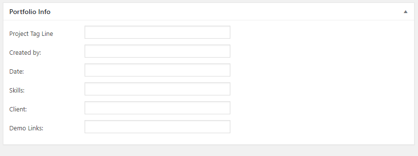
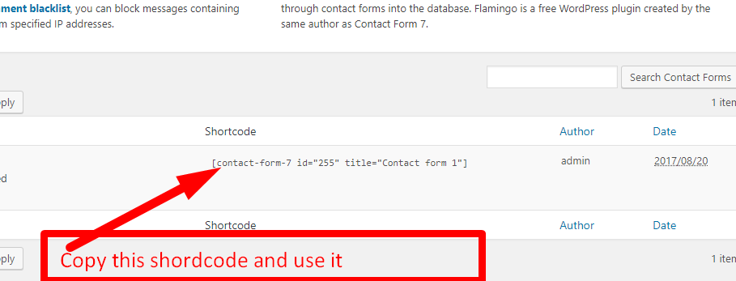
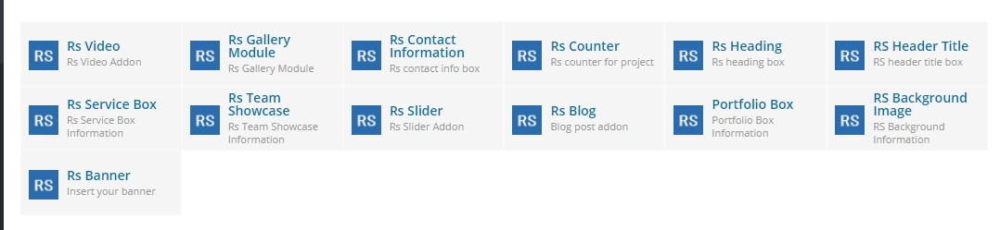

Getting started
On behalf of our team, we would like to thank you for purchasing this theme. Your support encourages us to build better themes and continuously bring value to our products. This documentation file covers all the information needed to install and use this theme. You'll find everything you need to know to create a stunning and beautiful website in minutes.
Installing the theme
In order to install the theme you need to have a WordPress copy already installed on your own server.
Below are some useful links for WordPress information:
- WordPress Codex - general information about WordPress and how to install it on your server
- First Steps With WordPress - general information that covers a wide variety of topics
- FAQ New To WordPress - the most popular FAQ's regarding WordPress
Install the theme from WordPress or FTP
NOTE: Once you have downloaded the theme package from ThemeForest you must unzip it and upload only the inner zip file named mifo.zip.
Step by step instructions:
- Login to your WordPress site's administration area
- Navigate to Appearance > Themes > Add New > Upload theme
- Click on the "Add New" button, then click on the "Upload Theme" button and also check below image
- Upload the theme zip file named mifo.zip
- Click "Activate"
If this method fails we recommend uploading the theme via FTP. Open your FTP client, move to your WordPress installation path /wp-content/themes and upload the unziped mifo folder.
After the upload is complete navigate to Appearance > Themes and activate the theme.
Install the child theme
Rubrash's main download folder includes a child theme. A WordPress child theme allows you to apply custom code changes to your site. Using a child theme ensures your customizations will not be overwritten, even if you update the parent theme.
You can same way install child thene as like parent theme. You will get child theme under main files and name is Rubrashwp-child.zip
Install theme required plugins
After the theme is installed a message box will appear requesting you to install 8 required plugins:
- RS Addon Plugin - theme addone plugin for page builder
- RS Framework Plugin - theme core plugin
- Visual Composer - Premium content builder plugin
- CL Testimonial - Premium plugin
- Contact Form 7 - available for download with WordPress plugin repository
- Mailchip For WP - plugin used for Newslellter subscription
- Breadcrumb Trail - plugin used for breadcumbs
- WordPress One Click Importer - plugin used for importing theme demo data
These plugins must be installed for the theme to work properly.
Plugins documentation and video tutorials
Visual Composer
Documentation: http://kb.wpbakery.com/
Video tutorials: https://vc.wpbakery.com/video-tutorials/
Plugins licence
When you purchase a theme from ThemeForest that bundles Visual Composer and Revolution Slider, you are free to use these Premium plugins with the theme. However, your Rubrash purchase does not give you individual Visual Composer and Revolution Slider licenses that allow you to activate or download these plugins as you wish. Activation doesn’t mean the plugin will not work but only that you cannot receive direct updates. Please don't worry if you see warning messages about the plugin license activation.
You can use these plugins with the Rubrash theme and you are fully compliant with the Envato’s policy, but you cannot activate them as the owner (so don't try to use the Rubrash purchase code to activate one of these plugins).
New plugin updates will be provided when we issue new theme updates. As soon as a new version is available for download, we will surely update the theme after we will fully test the plugins to make sure there are no bugs that will conflict with our own update. We will also fully test new theme versions before releasing them on ThemeForest.
3rd Party Plugin Instal
If you need any third party plugin install in theme you should follow below steps:
- Login to your WordPress site's administration area
- Navigate to Plugins > Add New > Upload Plugins and check below image
- This way you can add plugins when your need
Importing demo content
The fastest way to import our demo content is to use the Demo Content Importer. The Demo Content Importer provides you with all of Rubrash’s pages and posts, sample sliders, widgets, theme options, assigned pages, and more. Using this import feature is recommended for fresh installs. The automatic import will NOT replace existing content however. We always recommend running it on a fresh WordPress installation.
- Make sure you have all the required plugins installed and activated.
- Navigate to Appearance > Import Demo Data .
- Then Click to Import Demo Data
- Wait until the import routine is done. Please be patient and don't navigate away, as this can take few minutes depending on your host's performance.
- You will be notified once the importing process is completed.
Slider Setup
- Navigate to Slider and then you can easily add slider check image also
Note: The "Internal Pages" can be imported without affecting your content.
IMPORTANT: Importing demo content will overwrite all existing option values, please proceed with caution!
Mauall Upload
If one click demo data don't work use manuall upload system.Form one click demo data plugin you will get manuall upload system Check below image
After clcik it then you will get option select files. You will get files form demo-data folder at mail download files.
After seelct all files just give click submit button and your are done for import demo data
Creating pages
For Make new page you can check below image:
- Create a separate page (as child of the master page - "Home") for each of the sections you would like to insert on the one page layout.
- The order of these sections is given by the "page order" attribute set for each page when created. Set the page order for each of these child pages (see screenshot below).
Page Layout and Page Header Settings
- You can setup page layout under all pages
Page Meta Settings
On the bottom of each page there are 1 meta settings boxes. Here you can configure the following:
- Hide page title
- Add header style
- Show/hide breadcrumbs
- Show/hide toolbar
Setting up the Post type Portfolio

Same way you can add other elements under Cl Testimonial, Gallery section
Setting up the menu
Navigate to Appearance > Menus and create your main menu. Inside the "Manage Locations" tab you can assign this menu as the Header Menu.
The theme features two menu locations: Header and Footer menu.
Menu items linking to section pages
To create a menu item linking to a section of the One Page template select Links from the left side panel and set the "URL" to #page-slug and "Link text" as the name of the menu item (eg. #about-us as URL and "About us" as Link text).
The left side panel box should look like this:
Menu items linking to stand alone pages
If you want to include a stand alone page menu item use the "Pages" tab, select desired page and click "add to menu".
Contact Form Setup
Rubrash wp theme comes with contat form 7 plugin. You can easily setup this form
After login admin Navigate to Contact and click add new and check below image
Then Save contact form you will get shordcode and you can add this shorcode any page post or widget Check image also

Theme Options
You can access the Theme Options panel by going to Navigate > RS Options. Theme various options are organized into vertical tabs on the left side.
General Sections
Logo - Main logo image
Favicon - Upload favicon image
Off Canvas - You can on/off off canvas here
Preloader - You can on/off preloader here
Go to Top - You can on/off top to bottom scroll here
Header
- Show Top Bar - Choose to display top bar on/off
- Show Social Icon Header Section - Choose to display social icon on/off
- Add top phone number - You can add phone number here
- Add Phone pre text here - You can add pre text here
- Email Address - Add email address here
- Qutoe Button text and Qutoe button link can add here
Typography
Body font settings - Font Family (Google fonts), Font Weight & Style, Text Align, Font Size, Line Height, Font Color
Headings font settings - Font Family (Google fonts), Font Weight & Style, Text Align, Font Size, Line Height, Font Color
Social Icon
404 Page
Page title - Default: 404
Text - Default: Page text can add here
Back to homepage button text - Default: Back to homepage
Background image - Upload a background image displayed as a cover and forced to full width
Footer
Upload Footer Logo - You can upload logo here
Social Icon - You can on/off social icon here
Copyright Text - Bottom footer copyright text
Footer Style - You can assign footer logo here.
Visual Composer
This section details the main elements and aspects of Mifo's unique application of the Visual Composer Page Builder. Discovering the different areas, icons and tools we have included will enable you to build beautiful pages quickly.How to use the page builder
In this overview, you will find everything you need to know about Visual Composer page builder; starting with how the most commonly used interface elements work. Visual Composer has everything you need to manage content elements with a single click: add, edit, duplicate, remove or create element presets, etc. You can also find some interesting video tutorials with VC Video Academy here: https://vc.wpbakery.com/video-tutorials/
1) Add elements
RS Elements gives you instant access to 10 built-in content elements. Each element has been carefully crafted, and offers multiple options. Simply insert elements into your page, click on the Plus Icons, and you’ll see an overlay window containing all the available modules. Select the one you want, and it will be inserted onto the page.
2) Drag and drop elements
With the intuitive drag and drop interface you can quickly change your layout or reorder elements. Simply drag elements or modules using the Drag Arrows Icon.
3) Open Settings
You can modify rows, columns, and module presets in seconds, and build complex layouts without using a single line of code. Simply open the setting from the Pen Icons. This will open a different overlay window for every module category with your options organized in convenient tabs.
4) Copy, paste and clone elements
One way to make page building proceed more efficiently is to go to use the copy, paste and close functionalities.
5) Custom CSS code
If you need to insert custom CSS code for use in a single page only, you can easily do so. The custom code will be stamped only for the page in question, and will not appear in any other page. At the top right corner, you will see a Gear icon. Click on it to open a code editor window and insert your custom code.
RS theme Elements Overview
Our RS Theme Addons plugin gives you instant access to built in content elements. Our Elments we developed based of our theme.
Element list overview:

FAQ
1) Are you sure you want to do this?
When you are trying to install the theme and WordPress comes back with the message "Are you sure you want to do this?" it means that your PHP has a setting for upload files lower than the ZIP file size.
What you need to do is contact your hosting provider and ask to increase the "upload_max_filesize" and "post_max_size" to at least 32mb.
2) Demo images not included in the sample content
Due to copyright restrictions some of the live preview images/videos were not included with the demo content. We are not allowed to redistribute them.